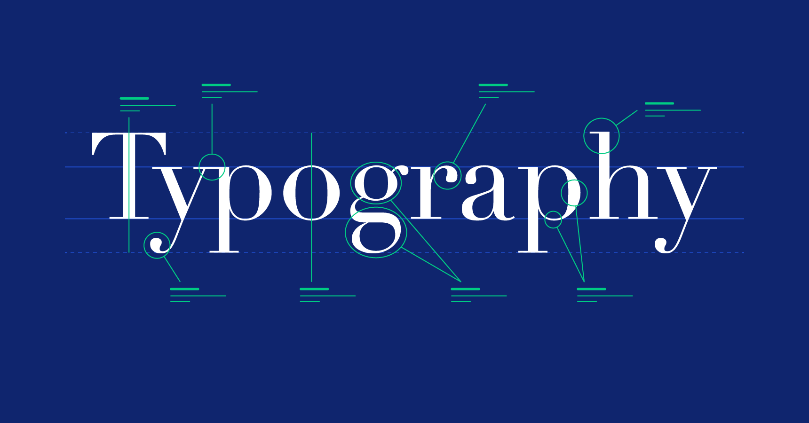

Typeface: A typeface is also called a font family. Typefaces are the design of the fonts we actually use, it is a collection of a specific type of font for all letters and punctuation. Serif: An extra stroke that is added to the end of the main vertical and horizontal strokes of a letterform.
There are five basic classifications of typefaces: serif, sans serif, script, monospaced, and display.
by Ivy Duckett
The briard, or berger de brie, is a large breed of dog traditionally used as a herder and guardian of sheep...
Leading (pronounced ledding) is a term typographers use for the vertical space between lines of text. In a typeface, the part of a letter that drops beneath the baseline is called